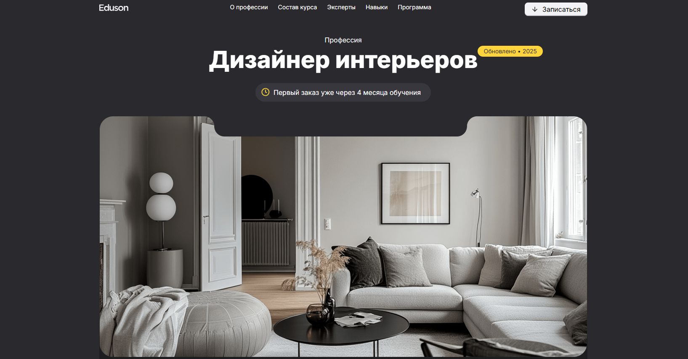
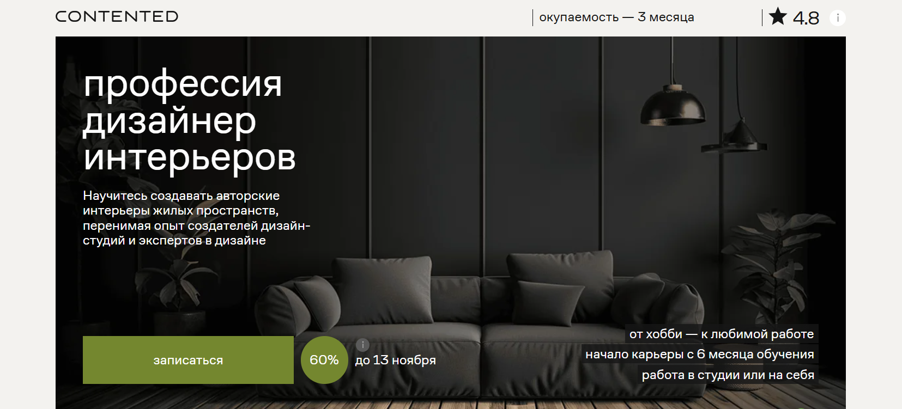
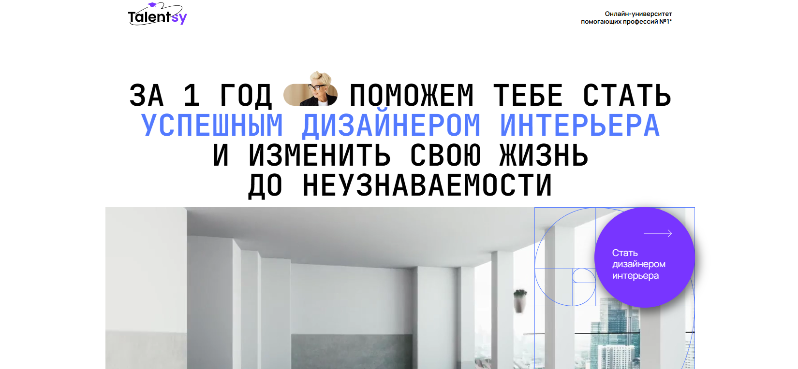
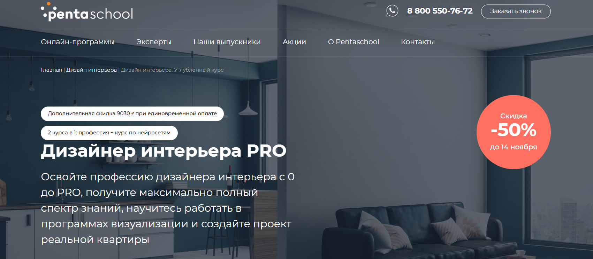
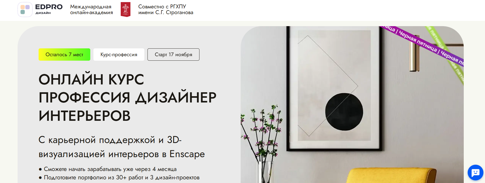
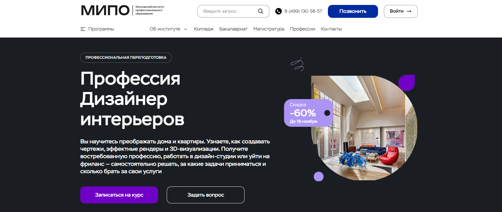
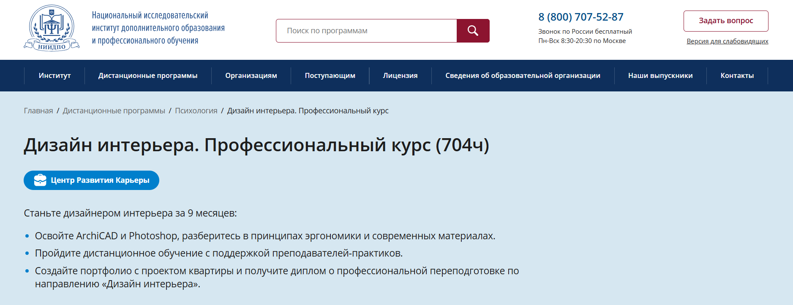
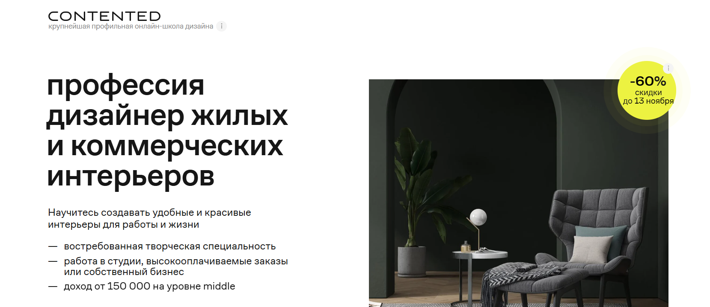
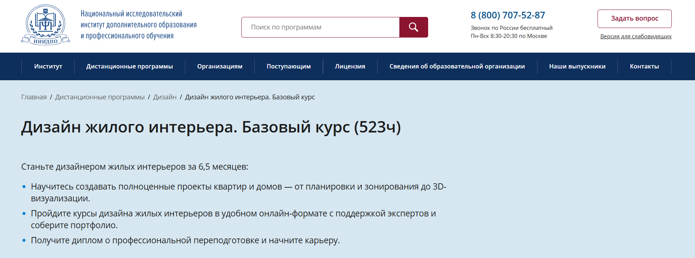
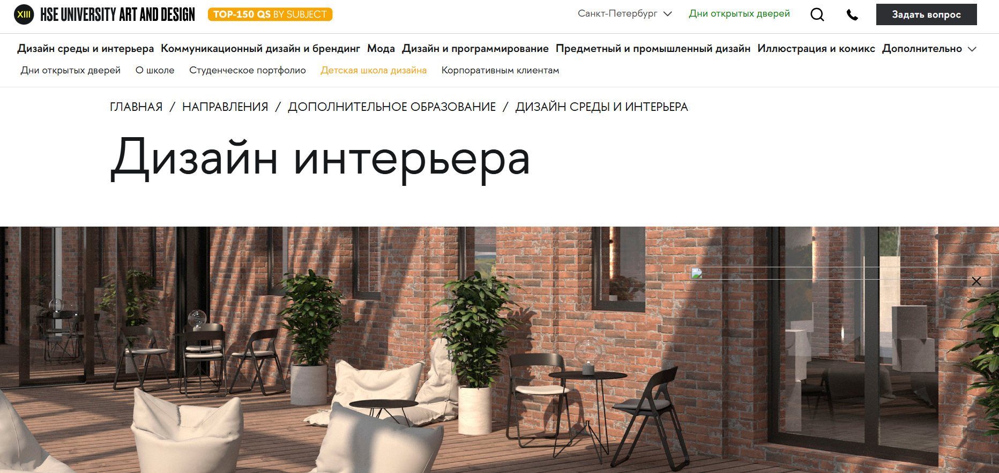

Дизайн интерьера — это искусство и технология проектирования жилых и коммерческих интерьеров, где важна каждая деталь — от планировки пространства до подбора мебели и освещения. Освоить профессию дизайнера интерьеров можно с нуля, изучая основы проектирования жилых помещений, декорирования и оформления интерьеров в современных школах дизайна. Обучение дизайну интерьера помогает развить базовые навыки проектирования, научиться создавать визуализацию и концепции будущих интерьеров, работать с компьютерными программами и разрабатывать проекты для реальных заказчиков. Сегодня доступно множество форматов обучения — от очных занятий до дистанционных курсов с индивидуальным подходом и практическими заданиями. Мы составили рейтинг лучших программ, где можно пройти обучение, получить диплом и начать карьеру в сфере дизайна интерьеров.
Информация обновлена:
ТОП онлайн-курсов обучения на Дизайнера Интерьеров
- 🏆 Дизайнер интерьеров — Академия Эдюсон (по промокоду kursy скидка 🎁 5%)
- 🏆 Дизайнер жилых интерьеров — Bang Bang Education
- 🏆 Дизайн интерьеров — Contented
- Дизайнер интерьера — Talentsy (по промокоду EDPART5 скидка 🎁 5%)
- Дизайнер интерьера — Нетология
- Дизайнер интерьера PRO — Pentaschool
- Профессия Дизайнер интерьеров — Skillbox
- Дизайн интерьеров — Академия TOP
- Дизайнер интерьеров — EDPRO
- Профессия Дизайнер интерьеров — МИПО (по промокоду onlinekursy действует скидка 🎁 10% )
- Дизайнер жилых интерьеров — GeekBrains
- Дизайн интерьера. Профессиональный курс (704 ч) — АНО «НИИДПО»
- Дизайнер интерьера — MITM
- Дизайнер интерьеров — ИПО
- Дизайн и декорирование интерьера — НЦРДО (по промокоду onlinekursy действует скидка 🎁 5%)
- Дизайнер интерьера — Бруноям
- Дизайн жилых и коммерческих интерьеров с нуля — Contented
- Дизайн жилого интерьера. Базовый курс — АНО «НИИДПО»
- Дизайн интерьера — Школа дизайна НИУ ВШЭ
- Дизайн жилого интерьера. Базовый курс — Pentaschool
- Дизайнер интерьера — Международная школа профессий
Бесплатные курсы
- Бесплатный мини-курс «Как стать дизайнером интерьеров» – Академия Эдюсон
- Профессия дизайнер интерьера, бесплатно – Talentsy
- Старт в дизайне интерьера, бесплатно – Нетология
- Дизайн интерьера: бесплатный курс для начинающих – Skillbox
Отличительные преимущества каждой дистанционной программы обучения по дизайну интерьеров
| № | Курс и школа | Отличительные преимущества | |
|---|---|---|---|
| 🥇 | Дизайнер интерьеров — Академия Эдюсон | Диплом, подтверждённый «Сколково», помощь в трудоустройстве, 8 реальных проектов, индивидуальный куратор и обучение на 3Ds Max, Revit, ArchiCAD. | Перейти |
| 🥈 | Дизайнер жилых интерьеров — Bang Bang Education | Стажировка в партнёрских студиях, преподаватели из SVESMI и БВШД, 90% практики, портфолио из 5 проектов и диплом гос. образца. | Перейти |
| 🥉 | Дизайн интерьеров — школа Contented | До 12 месяцев онлайн-обучения, диплом установленного образца, практические задания с реальными заказами и поддержка кураторов. | Перейти |
| 4 | Дизайнер интерьера — Talentsy | 3 диплома — РФ, MBA (Прага), CPD (Великобритания); стажировки у партнёров, обучение в мини-группах и акцент на международную практику. | Перейти |
| 5 | Дизайнер интерьера — Нетология | Акселератор трудоустройства, освоение нейросетей (Midjourney, DALL·E), офлайн-встречи, 10 консультаций с экспертами и диплом гос. образца. | Перейти |
| 6 | Дизайнер интерьера PRO — Pentaschool | Интеграция нейросетей в проектирование, бессрочный доступ к материалам, диплом гособразца и карьерный центр с реальными заказчиками. | Перейти |
| 7 | Профессия Дизайнер интерьеров — Skillbox | Гарантия трудоустройства или возврат денег, обучение с нуля, курс по нейросетям, 5 проектов в портфолио и поддержка HR-консультанта. | Перейти |
| 8 | Дизайн интерьеров — Академия TOP | Самая доступная цена, диплом о переподготовке, 6 месяцев обучения, реальные проекты и работа с заказчиками в онлайн-формате. | Перейти |
| 9 | Дизайнер интерьеров — EDPRO | Совместная программа с РГХПУ им. Строганова и чешским институтом, 3 диплома, 30+ работ в портфолио и международная сертификация. | Перейти |
| 10 | Профессия Дизайнер интерьеров — МИПО | Федеральный реестр ФИС-ФРДО, диплом гос. образца, акцент на практику и преподаватели с международным опытом в сфере дизайна. | Перейти |
| 11 | Дизайнер жилых интерьеров — GeekBrains | Гарантия трудоустройства, проекты с реальными заказчиками, коллаборация GeekBrains и Skillbox, современные инструменты 3D-дизайна. | Перейти |
| 12 | Дизайн интерьера. Профессиональный курс — АНО «НИИДПО» | Доступ к архиву 9000+ вебинаров, диплом установленного образца, практические задания и налоговый вычет 13%. | Перейти |
| 13 | Дизайнер интерьера — Московский институт технологий и управления | Интенсивный формат (от 3 мес.), диплом гособразца, поддержка 24/7 и налоговый вычет за обучение. | Перейти |
| 14 | Дизайнер интерьеров — Институт профессионального образования (ИПО) | Диплом, внесённый в ФИС-ФРДО, реальная практика, шаблоны и чек-листы, гибкий график и поддержка кураторов. | Перейти |
| 15 | Дизайн и декорирование интерьера — НЦИРДО | Самая бюджетная программа с гос. дипломом, обучение от 839 ₽/мес, официальная регистрация в ФРДО и HR-консультации. | Перейти |
| 16 | Дизайнер интерьера — школа Бруноям | Наставник в Telegram, упор на практику и 3Ds Max, бессрочный доступ к материалам, возможность начать зарабатывать во время обучения. | Перейти |
| 17 | Дизайн жилых и коммерческих интерьеров с нуля — Contented | Офлайн-стажировка в архитектурном бюро, карьерный центр, 5 реальных проектов и диплом гос. образца. | Перейти |
| 18 | Дизайн жилого интерьера. Базовый курс — АНО «НИИДПО» | Диплом гособразца, 6,5 месяцев онлайн, доступ к архиву 9000+ вебинаров, проект квартиры в портфолио. | Перейти |
| 19 | Дизайн интерьера — Школа дизайна НИУ ВШЭ | Очное и дистанционное обучение, преподаватели ВШЭ, 3 проекта в портфолио, акцент на европейские методики и дизайн мышление. | Перейти |
| 20 | Дизайн жилого интерьера. Базовый курс — Pentaschool | Диплом установленного образца, бессрочный доступ, обучение у дизайнеров ТВ-шоу, создание проекта квартиры с нуля. | Перейти |
| 21 | Дизайнер интерьера — Международная школа профессий | Короткий курс (20 недель), диплом гос. образца, обучение за счёт государства или маткапитала, реальные проекты и рейтинг 4.7/5. | Перейти |
1. 🏆 Дизайнер интерьеров — Академия Эдюсон

- ✅ Официальный сайт: eduson.academy
- 💸 Цена обучения: от 125 148 ₽ (со скидкой 60%).
- 💳 Рассрочка: беспроцентная от 10 429 ₽ в месяц на 12 месяцев, оформление за 2 минуты.
- 📚 Формат: онлайн-занятия, видеоуроки, практические кейсы, домашние задания, обратная связь от экспертов.
- ⏳ Продолжительность: 400 часов, 8 проектов в портфолио.
- 📜 Документ: диплом о профессиональной переподготовке, подтвержденный «Сколково».
- 📝 Трудоустройство: помощь в поиске работы, консультации по резюме и собеседованиям.
- 🔷 Для кого подходит курс: для начинающих дизайнеров интерьеров, желающих с нуля освоить профессию и начать зарабатывать уже через 4 месяца.
Особенности:
Программа создана для тех, кто хочет освоить профессию дизайнера жилых и коммерческих интерьеров по удобным графикам обучения. Все обучение проходит дистанционно и включает реальные проекты, которые помогут собрать портфолио. Студенты получают поддержку куратора, участвуют в практике с реальными заказами и осваивают навыки проектирования жилых пространств. Курс охватывает основы дизайна интерьеров, декорирование помещений, подбор мебели и материалов, создание визуализаций в 3Ds Max, Revit и ArchiCAD. После окончания обучения выпускники получают диплом, подтверждающий квалификацию, и помощь в трудоустройстве. Обучение подходит для тех, кто хочет открыть собственную студию дизайна или работать фрилансером.
Чему учатся студенты:
- Создавать проекты жилых интерьеров под ключ — от планировки до декора
- Разрабатывать эргономичные планировки и функциональные решения
- Создавать визуализации в 3Ds Max и ArchiCAD
- Подбирать цвета, материалы и мебель под разные стили
- Оформлять концепции и мудборды для заказчиков
- Рассчитывать бюджеты и управлять проектами
- Коммуницировать с клиентами, поставщиками и строителями
- Проводить авторский надзор и корректировать этапы проектирования
Преподаватели:
- Катерина Пережогина — более 10 лет опыта в дизайне интерьеров
- Елена Никитина — дизайнер интерьеров с 15-летним стажем
- Елена Парамонова — 15 лет в профессии, дизайнер интерьеров и декоратор
Преимущества:
- Обучение полностью в онлайне — подходит для любого региона
- Помощь в трудоустройстве после окончания курса
- Создание портфолио из 8 реальных проектов
- Поддержка личного куратора на всех этапах обучения
- Современные инструменты: 3Ds Max, Revit, Adobe Photoshop, ArchiCAD
- Пошаговое обучение от основ до профессионального уровня
- Налоговый вычет 13% и беспроцентная рассрочка
- Диплом установленного образца с подтверждением от «Сколково»
Отзывы учеников:
Студенты отмечают практическую направленность программы, внимание кураторов и актуальные навыки, востребованные на рынке. Среди плюсов — возможность совмещать учебу с работой, доступ к полезным материалам и уверенный старт карьеры дизайнера интерьеров уже после первых месяцев прохождения курса.
Перейти на официальный сайт курса2. 🏆 Дизайнер жилых интерьеров — Bang Bang Education
- ✅ Официальный сайт: bangbangeducation.ru
- 💸 Цена обучения: от 121 050 ₽ со скидкой до −60% (полная стоимость 269 000 ₽).
- 💳 Рассрочка: от 6 725 ₽/мес до 18 месяцев без переплат.
- 📚 Формат: дистанционное обучение, включает видеоуроки, практические задания, вебинары, ревью с наставниками и карьерные консультации.
- ⏳ Продолжительность: 10 месяцев, 8–10 часов в неделю.
- 📜 Документ: диплом о профессиональной переподготовке (гослицензия № Л035-01298-77/00552316).
- 📝 Трудоустройство: помощь в составлении резюме, подготовке к собеседованиям, стажировка и сопровождение карьерного центра Ultimate Education.
- 🔷 Для кого подходит курс: начинающим дизайнерам, желающим освоить проектирование интерьеров с нуля и создать портфолио для работы в студии дизайна или на фрилансе.
Особенности:
Программа рассчитана на тех, кто хочет освоить профессию дизайнера жилых интерьеров с нуля и начать зарабатывать уже через полгода обучения. Курс сочетает дистанционное обучение с практическими заданиями на реальных проектах и поддержкой кураторов. В процессе обучения студенты изучают основы дизайна, планировку жилых помещений и декорирование интерьера, осваивают навыки проектирования в программах Photoshop, Archicad и 3ds Max. После окончания обучения выпускники получают официальные дипломы и могут устроиться в студию дизайна или начать собственные проекты. Курс дает практические знания по созданию концепций, визуализаций и оформлению интерьеров жилых пространств, помогая сформировать профессиональный уровень и портфолио из пяти реальных проектов.
Чему учатся студенты:
- Научатся проектировать жилые и общественные интерьеры с нуля.
- Создавать визуализации и планировки в 3D, подбирать мебель и материалы под бюджет заказчика.
- Разрабатывать чертежи, коллажи и мудборды.
- Создавать концепцию дизайн-проекта и готовить презентацию для клиента.
- Оформлять портфолио и составлять сопроводительное письмо.
- Работать с заказчиками и подрядчиками, вести проекты до реализации.
Преподаватели:
- Мария Катарьян — архитектор, дизайнер интерьеров, работала в SVESMI и Buromoscow, автор проектов для Политехнического музея.
- Александр Острогорский — архитектурный критик, преподаватель МАРШ и Британской высшей школы дизайна, автор книги «ГЭС-2: Энергия превращений».
- Кирилл Устинов и Петр Лукьянов — архитекторы, основатели бюро ANC concept, лауреаты ADD Awards и Interia Awards.
- Лена Борисова — архитектор-дизайнер, призер международного конкурса JAZZI, преподаватель «Софт Культуры» и GeekBrains.
- Яна Брюхнова — дизайнер интерьеров и архитектор, фаундер бюро Muno Design.
- Артем Оганян — арт-директор студии BŪRO, призер International Design Awards и ADD Awards.
Преимущества:
- Дистанционное обучение в удобном формате с гибкими графиками обучения.
- 90% практических заданий и реальная работа с заказчиками.
- Портфолио из 5 проектов, подходящих для трудоустройства.
- Освоение современных программ: Photoshop, Archicad, 3ds Max, SketchUp.
- Стажировка в партнерских студиях и возможность пройти отбор в OBJCT.
- Дополнительные курсы в подарок — по световому дизайну и продвижению бренда.
- Поддержка карьерного центра и консультации с экспертами рынка.
Отзывы учеников:
Студенты отмечают понятную подачу материала, насыщенную практику и внимательных кураторов. Многим удалось собрать профессиональное портфолио и получить первые заказы уже через несколько месяцев обучения. Отмечают высокое качество обратной связи и полезность карьерных консультаций.
Перейти на официальный сайт курса3. 🏆 Дизайн интерьеров — школа Contented

- ✅ Официальный сайт: contented.ru
- 💸 Цена: от 129 543 ₽, в зависимости от формата обучения.
- 💳 Рассрочка: доступна без переплат от 3 598 ₽/мес сроком до 24 месяцев.
- 📚 Формат: дистанционное обучение — видеолекции, домашние задания, практические проекты, тесты и работа с кураторами.
- ⏳ Продолжительность: 8–12 месяцев, с гибкими графиками обучения.
- 📜 Документ: выдается диплом о дополнительной профессиональной переподготовке установленного образца.
- 📝 Трудоустройство: помощь в создании портфолио, консультации по поиску заказчиков и рекомендациям в студии дизайна.
- 🔷 Для кого подходит курс: для начинающих дизайнеров, желающих освоить профессию дизайнера жилых интерьеров с нуля и получить практические навыки проектирования жилых и коммерческих интерьеров.
Особенности:
Программа создана для тех, кто хочет освоить профессию дизайнера интерьеров и научиться проектированию жилых и общественных пространств. Обучение проходит полностью онлайн, что позволяет совмещать учебу с работой. В процессе обучения студенты изучают основы проектирования интерьеров, осваивают оформление помещений, декорирование интерьера и навыки визуализации. В рамках курса обучающиеся научатся создавать визуализацию и концепции для жилых помещений, разрабатывать проекты для коммерческих пространств и общественных интерьеров. После прохождения обучения выпускники получают диплом, подтверждающий дополнительную профессиональную квалификацию и готовность работать в сфере дизайна.
Чему учатся студенты:
- Разрабатывать дизайн-проекты жилых интерьеров
- Создавать визуализацию будущего интерьера и чертежи
- Подбирать материалы, мебель и освещение
- Работать с компьютерными программами 3ds Max, Archicad и Photoshop
- Создавать концепцию оформления помещений
- Разрабатывать проекты коммерческих и общественных интерьеров
Преподаватели:
- Анна Горохова — практикующий дизайнер жилых интерьеров, автор проектов для жилых пространств и коммерческих помещений.
- Илья Иванов — специалист по визуализации и проектированию в 3ds Max и Archicad.
- Екатерина Смирнова — архитектор, преподаватель с опытом проектирования жилых интерьеров более 10 лет.
Преимущества:
- Можно освоить профессию дизайнера с нуля
- Курс охватывает все этапы проектирования интерьеров
- Практические задания с реальными заказами
- Дистанционный формат обучения и удобные графики
- Помощь кураторов и практикующих дизайнеров интерьеров
- Доступ к учебным материалам и обновлениям
- После окончания обучения выдается диплом установленного образца
- Возможность собрать портфолио и начать зарабатывать уже во время прохождения курсов
Отзывы учеников:
Студенты отмечают, что обучение проходит удобно и понятно, даже если начинаешь с нуля. Отмечают, что преподаватели — практикующие дизайнеры интерьеров, дающие полезные советы и реальные кейсы. Многие после окончания курсов получают заказы уже на этапе обучения и создают собственные проекты для жилых интерьеров. Отзывы также подчеркивают высокий уровень преподавания, современный подход и качественную обратную связь от кураторов.
Перейти на официальный сайт курса4. Дизайнер интерьера — Talentsy онлайн-университет помогающих профессий №1

- ✅ Официальный сайт: talentsy.ru
- 💸 Цена: от 205 008 ₽ со скидкой 40 %.
- 💳 Рассрочка: беспроцентная от 8 542 ₽/мес на 24 месяца, первый платёж через 2 месяца.
- 📚 Формат: дистанционное обучение — видеоуроки, практические задания, мини-группы, тесты и работа с наставником.
- ⏳ Продолжительность: 1 год.
- 📜 Документ: диплом о профессиональной переподготовке, международный MBA-диплом (Open European Academy, Прага) и сертификат CPD (Великобритания).
- 📝 Трудоустройство: стажировки у партнёров, поддержка кураторов, помощь в поиске клиентов и создании портфолио.
- 🔷 Для кого подходит курс: для начинающих дизайнеров интерьеров, желающих освоить профессию с нуля и получить практические навыки проектирования жилых и коммерческих интерьеров.
Особенности:
Программа Talentsy поможет освоить профессию дизайнера жилых интерьеров с нуля и создать первое портфолио. В обучении совмещены теория и практика: студенты набираются опыта на реальных проектах, учатся проектированию жилых помещений и оформлению интерьеров в разных стилях. Занятия проходят онлайн в удобное время и включают практические задания, работу в мини-группах до 15 человек и индивидуальные консультации. Курс подходит тем, кто хочет освоить навыки проектирования интерьеров жилых и коммерческих пространств, создавать визуализацию и оформлять интерьерные проекты. После прохождения обучения выпускники могут открыть собственную студию дизайна и зарабатывать уже во время учёбы.
Чему учатся студенты:
- Освоить основы проектирования жилых и общественных интерьеров
- Создавать визуализацию и чертежи в ArchiCAD, Photoshop, 3ds Max
- Разрабатывать дизайн-проекты для любых помещений и создавать концепцию будущего интерьера
- Научиться работать с заказчиком, оформлять бриф и составлять договор
- Подбирать материалы, мебель и освещение для оформления помещений
- Научиться привлекать клиентов и рекламировать свои услуги в сфере дизайна
Преподаватели:
- Трегубов — практикующий дизайнер, эксперт по проектированию интерьеров с опытом более 10 лет
- Чеботарь — арт-директор и владелец дизайн-студии
- Демушкина — победитель российских и международных конкурсов по дизайну интерьеров
- Поршнева — архитектор, ведущий преподаватель по оформлению интерьеров жилых помещений
- Горбунова — дизайнер жилых и коммерческих интерьеров, специалист по декорированию и цветовым решениям
- Сухой, Усанина, Карельская, Котлукова, Козырева, Рогачева, Тимофеев, Паршихина, Леонычева — опытные практикующие дизайнеры и архитекторы
Преимущества:
- Дистанционное обучение в любое время и из любой точки мира
- Индивидуальный наставник и гибкий график обучения
- Практика с первых дней и работа над реальными проектами
- Возможность зарабатывать уже в процессе обучения
- Стажировки у партнёров и помощь в трудоустройстве
- Дипломы российского и международного образца
- Форматы обучения подходят для новичков и тех, кто хочет повысить уровень профессиональных навыков
Отзывы учеников:
Выпускники Talentsy отмечают понятную подачу материала, качественные видеоуроки и постоянную поддержку кураторов. Многие начинающих дизайнеров говорят, что смогли освоить новую профессию и создать первое портфолио ещё до окончания обучения. Студенты подчеркивают, что курс помогает научиться создавать дизайн-проекты жилых интерьеров и получить практический опыт работы с реальными заказчиками.
Перейти на официальный сайт курса5. Дизайнер интерьера – Нетология
- ✅ Официальный сайт: netology.ru
- 💸 Цена: от 92 900 ₽ до 159 000 ₽ со скидкой 50%.
- 💳 Рассрочка: до 36 месяцев без переплат, ежемесячный платёж от 4 073 ₽.
- 📚 Формат: дистанционное обучение, видеолекции, практические задания, вебинары, квизы, доступ к учебным материалам и комьюнити.
- ⏳ Продолжительность: от 8 до 14 месяцев, в зависимости от выбранной программы.
- 📜 Документ: диплом о профессиональной переподготовке установленного образца.
- 📝 Трудоустройство: индивидуальные консультации, карьерный клуб, акселератор трудоустройства, помощь в поиске заказчиков и стажировки у партнёров.
- 🔷 Для кого подходит курс: начинающим дизайнерам, желающим освоить профессию с нуля, специалистам смежных направлений и всем, кто хочет работать с интерьерным дизайном жилых и коммерческих пространств.
Особенности:
Программа обучает проектированию интерьеров жилых и общественных пространств с применением 7 профессиональных инструментов, включая ArchiCAD, Photoshop и 3ds Max. Курс помогает освоить профессию дизайнера и получить навыки проектирования, декорирования и визуализации интерьера. Студенты создают 5 дизайн-проектов на основе реальных брифов от заказчиков и получают консультации от практикующих дизайнеров. Обучение проходит в удобном темпе, а начать зарабатывать можно уже через четыре месяца. Курс сочетает дистанционное обучение с офлайн-встречами, что позволяет совмещать учебу с работой. По окончании выпускники получают документ государственного образца и поддержку в трудоустройстве.
Чему учатся студенты:
- Создавать концепции и визуализацию жилых интерьеров;
- Разрабатывать планировки и рабочие чертежи в ArchiCAD и AutoCAD;
- Работать с визуализациями в 3ds Max и Corona Renderer;
- Подбирать материалы, мебель и элементы декора для жилых и коммерческих интерьеров;
- Создавать презентации и мудборды для заказчиков;
- Планировать освещение и оформлять интерьер в разных стилях;
- Разрабатывать проекты квартир, комнат и общественных пространств.
Преподаватели:
- Владимир Любарски — дизайнер, архитектор, основатель бюро Lubarski architect, победитель шоу «Народный ремонт» на ТНТ;
- Наталья Мартынова — дизайнер интерьера, руководитель студии Martynova Interiors;
- Анна Никитина — дизайнер интерьера, руководитель студии SmthCreative;
- Александр Прохоров — эксперт по публичным выступлениям и дизайну презентаций, тренер спикеров TEDx.
Преимущества:
- Программа с трудоустройством и карьерной поддержкой от партнеров;
- Практические задания на основе реальных заказов;
- 10 бесплатных индивидуальных консультаций с экспертами;
- Доступ к комьюнити дизайнеров и офлайн-встречам в «Библиотеке материалов»;
- Гибкий формат обучения с возможностью совмещать учебу и работу;
- Освоение нейросетей Midjourney, DALLE-3 и других инструментов для работы с интерьерным дизайном;
- После окончания обучения выдается диплом о профессиональной переподготовке.
Отзывы учеников:
Студенты отмечают практическую направленность курса, удобные форматы обучения и профессиональную поддержку кураторов. Выпускники хвалят преподавателей за детальный разбор проектов, возможность освоить навыки создания визуализаций и уверенно выйти в сферу дизайна. Многие отмечают, что смогли начать зарабатывать уже во время прохождения курса.
Перейти на официальный сайт курса6. Дизайнер интерьера PRO — Московская академия дизайн-профессий Pentaschool

- ✅ Официальный сайт: pentaschool.ru
- 💸 Цена обучения: от 141 900 ₽ (со скидкой 50%).
- 💳 Рассрочка: от 11 825 ₽/мес - 0% без переплат на 3–12 месяцев.
- 📚 Формат: дистанционное обучение, видеоуроки, домашние задания, практические проекты, обратная связь от преподавателей.
- ⏳ Продолжительность: 11,5 месяцев.
- 📜 Документ: диплом о профессиональной переподготовке установленного образца.
- 📝 Трудоустройство: помощь Центра развития карьеры, подбор вакансий и консультации.
- 🔷 Для кого подходит курс: для начинающих дизайнеров, выпускников профильных вузов и тех, кто хочет освоить профессию с нуля и работать в сфере интерьерного дизайна.
Особенности:
Программа объединяет профессию дизайнера и курс по нейросетям, что позволяет студентам осваивать современные технологии проектирования интерьеров. После прохождения обучения выпускники смогут создавать проекты жилых и коммерческих интерьеров, использовать ArchiCAD, 3ds Max, Adobe Photoshop и другие программы визуализации. Обучение проходит полностью онлайн с гибким графиком. По окончании курса студенты получают диплом о дополнительном профессиональном образовании и готовое портфолио с проектами жилых помещений. Академия Pentaschool проводит обучение по лицензии и предоставляет бессрочный доступ к учебным материалам. Курс помогает освоить профессию дизайнера жилых пространств и начать зарабатывать уже в процессе обучения.
Чему учатся студенты:
- Разрабатывать дизайн-проекты жилых и общественных интерьеров
- Создавать визуализацию и планировку пространства
- Осваивать навыки проектирования и декорирования интерьера
- Работать в программах ArchiCAD, 3ds Max, Corona Render и Photoshop
- Создавать концепции оформления интерьеров и подбирать отделочные материалы
- Использовать нейросети для ускорения работы над проектами
- Создавать чертежи и вести коммуникацию с заказчиком
Преподаватели:
- Екатерина Степанова — дизайнер ТВ-шоу, основатель студии «Дизайн белых интерьеров», опыт в профессии 13 лет, дизайнер шоу «Школа ремонта» на ТНТ.
- Марина Костарнова — дизайнер в России и Бельгии, преподаватель с опытом более 20 лет, реализовала более 1000 проектов жилых и общественных интерьеров.
- Сергей Буравцов — 3D-дизайнер и фрилансер с опытом 14 лет, участвовал в создании визуализаций для международных проектов и рекламы.
Преимущества:
- Дистанционное обучение с гибким графиком
- Портфолио из реальных проектов по окончании курса
- Поддержка карьерного центра и стажировки с реальными заказчиками
- Преподаватели — практикующие дизайнеры интерьеров
- Возможность совмещать обучение с работой
- Бонусные курсы по нейросетям и юридическим аспектам профессии
- Бессрочный доступ к учебным материалам и обновлениям программы
- Выдается диплом о профессиональной переподготовке государственного образца
Отзывы учеников:
Студенты отмечают понятную подачу материала, качественную обратную связь и практическую направленность курса. Выпускники подчеркивают, что обучение помогло им собрать сильное портфолио, освоить навыки проектирования жилых интерьеров и начать зарабатывать уже во время прохождения курса. Многие отмечают высокий профессионализм преподавателей и поддержку кураторов на каждом этапе обучения.
Перейти на официальный сайт курса7. Профессия Дизайнер интерьеров — Skillbox
- ✅ Официальный сайт: skillbox.ru
- 💸 Цена: от 160 416 ₽ скидка 50% действует ограниченное время.
- 💳 Рассрочка: оплата обучения через 6 месяцев, доступна беспроцентная рассрочка от 6 684 ₽/мес и дополнительная скидка 5% при полной оплате.
- 📚 Формат: дистанционное обучение, включает видеолекции, практические задания, проекты, тесты и воркшопы с экспертами.
- ⏳ Продолжительность: от 4 месяцев, можно совмещать учебу с работой.
- 📜 Документ: диплом о профессиональной переподготовке государственного образца.
- 📝 Трудоустройство: гарантия поиска работы или возврат средств, помощь HR-консультанта и доступ к закрытому каналу вакансий.
- 🔷 Для кого подходит курс: начинающим дизайнерам, желающим с нуля освоить профессию и начать зарабатывать уже во время обучения.
Особенности:
Программа создана для тех, кто хочет с нуля освоить профессию дизайнера интерьеров и получить практические навыки проектирования жилых и коммерческих пространств. Студенты учатся создавать визуализацию, разрабатывать концепции и выполнять оформление интерьеров в современных стилях. Обучение проходит онлайн, что позволяет осваивать профессию в удобное время и темпе. Программа включает курс по нейросетям, помогает научиться работать с инструментами Midjourney, DALL·E и PromeAI. Обучение проходит с применением 10 программ проектирования и визуализации на выбор, включая Archicad, AutoCAD, Revit, 3ds Max, Corona Renderer и Photoshop. Студенты создают 5 и более проектов в портфолио и могут работать над собственным интерьерным проектом.
Чему учатся студенты:
- Создавать визуализацию и дизайн-проекты жилых интерьеров
- Разрабатывать планировку пространства и концепцию будущего интерьера
- Использовать современные программы для проектирования и визуализации
- Применять навыки декорирования интерьера и оформления помещений
- Продвигать свои услуги и личный бренд в сфере дизайна
- Работать с заказчиком, составлять спецификации и контролировать реализацию проекта
Преподаватели:
- Яна Волкова — основательница студии YVD, дизайнер жилых и коммерческих интерьеров
- Анастасия Федоровская — дизайнер интерьеров, основатель бюро ANFEDO, эксперт журналов Elle Decoration Russia и Interior+Design
- Екатерина Миронова — дизайнер интерьеров, специализируется на проектировании жилых помещений и общественных пространств
Преимущества:
- Возможность освоить профессию дизайнера интерьеров с нуля
- Работа с практикующими дизайнерами и кураторами с опытом более 5 лет
- Дистанционное обучение с гибкими графиками и поддержкой специалистов
- Создание портфолио из реальных проектов с заказчиками
- Участие в конкурсах и воркшопах от партнёров Skillbox
- Освоение навыков проектирования и визуализации на профессиональном уровне
- Помощь в трудоустройстве и составлении резюме
- Возможность открыть собственную студию дизайна после окончания курса
Отзывы учеников:
Выпускники отмечают, что обучение помогает быстро освоить навыки проектирования интерьеров и начать зарабатывать уже во время прохождения курсов. Студенты хвалят практический подход, понятные материалы и поддержку кураторов. Многие открыли свои студии дизайна, нашли первых клиентов и успешно работают на фрилансе. Особенно выделяют возможность совмещать дистанционное обучение с основной работой и получать обратную связь от опытных преподавателей.
Перейти на официальный сайт курса8. Дизайн интерьеров — Академия TOP
- ✅ Официальный сайт: online.top-academy.ru
- 💸 Цена: от 44 064 ₽.
- 💳 Рассрочка: доступна, от 3 672 ₽ в месяц.
- 📚 Формат: дистанционное обучение, видеолекции, домашние задания, тесты, практические проекты.
- ⏳ Продолжительность: 6 месяцев.
- 📜 Документ: диплом о дополнительной профессиональной переподготовке.
- 📝 Трудоустройство: помощь в создании портфолио и поиске реальных заказчиков.
- 🔷 Для кого подходит курс: для начинающих дизайнеров интерьеров, желающих освоить профессию с нуля и работать в сфере проектирования жилых и коммерческих интерьеров.
Особенности:
Программа курса создана для тех, кто хочет освоить основы проектирования интерьеров и научиться оформлению помещений разных типов. Обучение проходит в удобном онлайн-формате и позволяет совмещать учёбу с работой. Студенты изучают графические программы, создают визуализацию и чертежи, разрабатывают концепции жилых интерьеров и оформление общественных пространств. Во время обучения можно создавать реальные дизайн-проекты и оформить портфолио для работы с заказчиками. После окончания обучения выпускники получают диплом и смогут начать карьеру в студиях дизайна или вести собственные проекты.
Чему учатся студенты:
- Создавать концепцию и планировку жилых интерьеров.
- Работать в 3ds Max, SketchUp и AutoCAD для создания визуализаций и чертежей.
- Подбирать мебель, материалы и цветовые решения для оформления помещений.
- Разрабатывать проекты жилых и коммерческих пространств от идеи до реализации.
- Научиться работать с реальными заказами и оформлять профессиональное портфолио.
Преподаватели:
- Кураторы — практикующие дизайнеры интерьеров с опытом в реальных проектах жилых и коммерческих помещений.
- Преподаватели — эксперты в сфере проектирования и графического дизайна, обладают опытом в ведущих студиях России.
Преимущества:
- Освоение профессии дизайнера жилых интерьеров с нуля.
- Современные форматы обучения и индивидуальные графики занятий.
- Развитие практических навыков проектирования и оформления помещений.
- Работа над реальными проектами и создание портфолио.
- Поддержка кураторов и доступ к дополнительным материалам в онлайне.
- Выдается диплом о профессиональной переподготовке, который поможет трудоустройству.
- Возможность совмещать обучение с работой и другими делами.
Отзывы учеников:
Выпускники отмечают понятную подачу материала, удобный формат дистанционного обучения и качественную обратную связь. Многие отмечают, что уже после прохождения курса смогли зарабатывать на первых проектах в дизайне жилых интерьеров и оформлении помещений. Курс помогает освоить навыки проектирования и создания интерьеров на практике.
Перейти на официальный сайт курса9. Дизайнер интерьеров – Международная онлайн-академия EDPRO

- ✅ Официальный сайт: edprodpo.com
- 💸 Цена обучения: от 100 062 ₽ со скидкой до 65%.
- 💳 Рассрочка: до 24 месяцев без переплат, от 5 360 ₽ в месяц.
- 📚 Формат: дистанционное обучение — видеоуроки, практические задания, 3D-визуализации, тесты и мастермайнды с наставниками.
- ⏳ Продолжительность: 8–11 месяцев (875 академических часов).
- 📜 Документ: три диплома установленного образца — от Академии EDPRO, РГХПУ имени С.Г. Строганова и международного чешского института OEAEP.
- 📝 Трудоустройство: карьерная поддержка, помощь в поиске первых клиентов, добавление выпускников в Клуб практикующих дизайнеров.
- 🔷 Для кого подходит курс: начинающим дизайнерам, архитекторам, желающим сменить профессию, и тем, кто хочет создавать проекты жилых и коммерческих интерьеров с нуля.
Особенности:
Программа курса разработана при участии профессоров Строгановского университета и практикующих дизайнеров с опытом более 20 лет. Обучение проходит онлайн с любого устройства и включает современные инструменты визуализации в Archicad, Enscape и Photoshop. Студенты осваивают навыки проектирования интерьеров, оформление жилых и коммерческих пространств, декорирование и подбор мебели. После завершения обучения выпускники получают дипломы, внесённые в федеральный реестр, и могут зарабатывать уже через 4 месяца, создавая дизайн жилых помещений и общественных интерьеров. Академия предлагает гибкие графики обучения и поддержку наставников на всех этапах прохождения курса.
Чему учатся студенты:
- Научиться создавать 3D-визуализации интерьеров и планировки жилых пространств.
- Освоить навыки проектирования и оформления интерьеров в программах Archicad, Enscape и Homestyler.
- Разрабатывать чертежи, коллажи и сметы для реализации проектов.
- Создавать концепции дизайна и работать с клиентом на всех этапах проекта.
- Разрабатывать дизайн-проекты жилых и коммерческих интерьеров с учётом стиля и эргономики.
- Оформить профессиональное портфолио с 30+ работами и 3 полноценными проектами.
Преподаватели:
- Желондиевская Лариса Владиславовна — кандидат наук, директор института ДПО РГХПУ им. С.Г. Строганова.
- Иноземцева Елена Григорьевна — дизайнер с опытом 20+ лет, преподаватель скетчинга и композиции.
- Майстровская Мария Терентьевна — доктор искусствоведения.
- Пермякова Екатерина Валентиновна — практикующий декоратор, член ТСХР.
- Червонная Мария Алексеевна — доцент, автор программ по дизайну интерьеров.
- Никита Плешаков — соавтор программы, эксперт в сфере визуализации интерьеров.
- Татьяна Астафьева — преподаватель по современным стилям и архитектуре интерьеров.
Преимущества:
- Совместная программа с РГХПУ имени С.Г. Строганова и чешским институтом OEAEP.
- Рассрочка без переплат и возможность обучаться в удобном формате онлайн.
- Поддержка наставников и индивидуальные консультации на каждом этапе обучения.
- Практическое обучение на реальных проектах жилых помещений и коммерческих интерьеров.
- Получение трёх дипломов, подтверждающих квалификацию международного уровня.
- Возможность начать зарабатывать ещё во время обучения и создать собственную студию дизайна.
- Доступ к платформе 24/7 и сохранение материалов после окончания курса.
- Бонусные курсы и подарки на сумму до 100 000 ₽ при записи на обучение.
Отзывы учеников:
Студенты отмечают практичность программы, поддержку наставников и возможность совмещать обучение с работой. Многие после окончания курса открыли собственные студии дизайна интерьеров, нашли клиентов через академию и начали зарабатывать уже во время прохождения обучения. Выпускники хвалят преподавателей за понятную подачу материала и помощь в оформлении портфолио.
Перейти на официальный сайт курса10. Профессия Дизайнер интерьеров — Московский институт профессионального образования (МИПО)

- ✅ Официальный сайт: mipo.msk.ru
- 💸 Цена обучения: 66 600 ₽ (со скидкой 60%, обычная стоимость — 166 540 ₽).
- 💳 Рассрочка: беспроцентная на 24 месяца — от 2 775 ₽ в месяц.
- 📚 Формат: дистанционное обучение с вебинарами, тестами, практическими заданиями, видеоматериалами и обратной связью от кураторов.
- ⏳ Продолжительность: 8 месяцев (764 академических часа).
- 📜 Документ: диплом о профессиональной переподготовке с внесением данных в Федеральный реестр ФИС-ФРДО.
- 📝 Трудоустройство: выпускники успешно работают в студиях дизайна, на фрилансе или открывают собственные проекты.
- 🔷 Для кого подходит курс: для начинающих дизайнеров, специалистов с опытом, а также для тех, кто планирует ремонт и хочет самостоятельно оформить интерьер.
Особенности:
Программа профессиональной переподготовки по направлению интерьерного дизайна построена на практике и современных технологиях проектирования жилых и общественных интерьеров. Студенты осваивают навыки проектирования с нуля, учатся создавать визуализацию, подбирать материалы и мебель, работать с цветовыми сочетаниями и освещением. Обучение проводится в удобном дистанционном формате, что позволяет совмещать учебу с работой. Все занятия сопровождаются поддержкой куратора и обратной связью от преподавателей. После окончания обучения выдается диплом, признанный в России и за рубежом. Выпускники курса получают возможность формировать собственное портфолио и развивать карьеру в сфере дизайна интерьеров.
Чему учатся студенты:
- Создавать дизайн-проекты жилых и коммерческих интерьеров
- Разрабатывать планировку и зонирование помещений
- Подбирать мебель, материалы и декор для оформления интерьеров
- Создавать 3D-визуализации и чертежи в ArchiCAD, 3ds Max и других программах
- Продвигать свои услуги и выстраивать личный бренд дизайнера
- Разрабатывать авторские концепции жилых пространств
Преподаватели:
- Журба Ольга — практикующий графический дизайнер, преподаватель с опытом более 10 лет, специалист в области изобразительного искусства (МПГУ).
- Исаев Дмитрий — дизайнер, художник-иллюстратор, арт-директор.
- Стар Игорь Анатольевич — искусствовед, fashion-эксперт, выпускник Fashion Institute of Design and Merchandising (Los Angeles, USA), профессор моды в Университете Монтеррея.
- Галкина Полина — дизайнер Всероссийского молодёжного проекта «Московская творческая лаборатория», специалист по промышленному дизайну.
- Исаева Мария Дмитриевна — графический дизайнер и иллюстратор, автор рекламных и анимационных проектов для крупных брендов.
- Сергачева Ксения — магистр искусства текстиля, дизайнер и художник, эксперт по развитию творческого потенциала.
Преимущества:
- Дистанционное обучение с возможностью изучать материал в удобное время
- Официальный диплом РФ, внесённый в федеральный реестр
- Практическая программа, адаптированная под современные требования рынка
- Поддержка кураторов и преподавателей с опытом от 7 до 25 лет
- Возможность собрать профессиональное портфолио из реальных проектов
- Обновление программы в соответствии с трендами дизайна интерьеров
- Скидка 60% при записи до 18 ноября
Отзывы учеников:
Выпускники МИПО отмечают удобный формат дистанционного обучения, оперативную поддержку кураторов и доступность материалов. Многие подчеркивают, что обучение помогло им освоить профессию с нуля, создать портфолио и начать зарабатывать как дизайнеры интерьеров. Отмечают качественную подачу материала и возможность совмещать обучение с работой.
Перейти на официальный сайт курса11. Дизайнер жилых интерьеров — GeekBrains
- ✅ Официальный сайт: gb.ru
- 💸 Цена: 176 328 ₽ (скидка 50%)
- 💳 Рассрочка: от 4 898 ₽/мес - 0%, сроком до 36 месяцев, без переплат и первого взноса
- 📚 Формат: дистанционное обучение, включает видеолекции, вебинары, практические занятия, тесты, квизы и проекты с реальными заказчиками
- ⏳ Продолжительность: 367 часов практики, 21 вебинар, 4 проекта, 8 часов в неделю
- 📜 Документ: официальный сертификат и удостоверение о повышении квалификации государственного образца
- 📝 Трудоустройство: гарантия трудоустройства — найдёте работу или вернут деньги, помощь в подготовке резюме и доступ к вакансиям партнёров
- 🔷 Для кого подходит курс: для начинающих дизайнеров, желающих освоить профессию с нуля, а также для тех, кто хочет развивать навыки проектирования жилых интерьеров и создавать дизайн-проекты для себя или клиентов
Особенности:
Курс сочетает теорию и практику, помогая освоить профессию дизайнера жилых интерьеров с нуля. Обучение проходит онлайн в удобном темпе, включает практику с реальными заказами и проектирование жилых пространств. Программа объединяет опыт GeekBrains и Skillbox, что позволяет студентам изучать проектирование интерьеров под руководством экспертов. В процессе обучения участники разрабатывают проекты жилых и коммерческих интерьеров, создают визуализации и портфолио для будущей карьеры. Программа помогает освоить современные инструменты 3ds Max, AutoCAD, Archicad и Photoshop, научиться работать с декором и материалами, а также уверенно взаимодействовать с заказчиками.
Чему учатся студенты:
- Научитесь создавать дизайн-проекты жилых интерьеров с нуля
- Освоите навыки проектирования интерьеров и визуализации в 3ds Max
- Изучите основы графического и интерьерного дизайна
- Научитесь создавать концепцию будущего интерьера и подбирать материалы
- Освоите инструменты Adobe Photoshop, AutoCAD, SketchUp, Revit и Archicad
- Научитесь создавать чертежи, визуализации и коллажи для жилых помещений
- Сможете вести проекты от идеи до реализации и оформления интерьеров
Преподаватели:
- Наталья Преображенская — основатель и шеф-дизайнер студии «Уютная квартира» и бюро TREND’UP, автор книг о дизайне интерьеров.
- Жанна Дикая — архитектор, сооснователь проекта Archifilmhotshot, исследователь архитектурной среды, спикер международных конференций.
- Екатерина Травинская — PR-директор студии Kirill Istomin Interior Design & Decoration, продюсер интерьерных съёмок и выставок.
Преимущества:
- Обучение с нуля до профессионального уровня
- Реальные проекты в портфолио и сопровождение преподавателей
- Живые вебинары и обратная связь от экспертов
- Возможность совмещать обучение с работой благодаря гибкому расписанию
- Современные инструменты для создания визуализаций интерьеров
- Гарантия трудоустройства и помощь карьерного центра
- Выдается сертификат и удостоверение о квалификации
- Бесплатные дополнительные курсы по нейросетям и английскому языку
Отзывы учеников:
Выпускники отмечают понятное объяснение сложных тем, удобный формат дистанционного обучения и полезную практику с реальными проектами. Студенты пишут, что преподаватели дают подробную обратную связь, помогают оформить портфолио и находят время для индивидуальных консультаций. Особенно ценят возможность совмещать обучение с работой и получать поддержку кураторов на каждом этапе прохождения курса.
Перейти на официальный сайт курса12. Дизайн интерьера. Профессиональный курс (704 ч) – АНО «НИИДПО»

- ✅ Официальный сайт: niidpo.ru
- 💸 Цена обучения: 121 440 ₽ (скидка 80 845 ₽. полная стоимость - 202 320 ₽).
- 💳 Рассрочка: 0 % на 24 месяца от 8 430 ₽/мес без первого взноса, оплата через Яндекс PAY.
- 📚 Формат: дистанционное обучение в онлайне — видеолекции, тесты, практические задания, обратная связь от преподавателей, онлайн-вебинары, архив 9000+ записей.
- ⏳ Продолжительность: 40 недель (9 месяцев).
- 📜 Документ: диплом о дополнительной профессиональной переподготовке по направлению «Дизайн интерьера».
- 📝 Трудоустройство: Центр Развития Карьеры помогает в составлении портфолио, резюме и поиске работы в студиях дизайна или на фрилансе.
- 🔷 Для кого подходит курс: для начинающих дизайнеров, желающих сменить профессию, фрилансеров и тех, кто хочет освоить интерьерный дизайн жилых и коммерческих интерьеров с нуля.
Особенности:
Программа по интерьерному дизайну создана для освоения профессии дизайнера жилых и общественных пространств через дистанционное обучение. Студенты изучают основы проектирования интерьеров, осваивают ArchiCAD и Photoshop, учатся создавать визуализации и чертежи для реальных проектов. В процессе обучения они формируют портфолио и приобретают практические навыки оформления помещений. Курс включает изучение современных стилей, декорирования интерьера и графического дизайна. После окончания обучения студенты смогут работать в дизайнерских студиях или открыть собственную практику. Дистанционный формат позволяет совмещать обучение с работой и освоить новую творческую профессию.
Чему учатся студенты:
- Научиться создавать концепции жилых и коммерческих интерьеров с учетом эргономики и стилей.
- Освоить ArchiCAD и Adobe Photoshop для проектирования и создания визуализаций.
- Подбирать материалы и цветовые решения для оформления помещений.
- Разрабатывать мудборды и семплборды для презентации идей заказчику.
- Создавать дизайн-проекты для жилых и общественных интерьеров и оформлять их в портфолио.
Преподаватели:
- Эксперты АНО «НИИДПО» и Академии дизайна Pentaschool — практикующие дизайнеры и архитекторы с опытом работы в студиях дизайна и архитектурных бюро.
Преимущества:
- Возможность освоить профессию дизайнера интерьеров с нуля.
- Дистанционное обучение с удобным графиком и доступом из любой точки мира.
- Бессрочный доступ к учебным материалам и вебинарам.
- Помощь в трудоустройстве и создании портфолио.
- Развитие навыков проектирования жилых и коммерческих пространств.
- Практические задания и обратная связь от опытных преподавателей.
- Налоговый вычет до 13 % и рассрочка на 24 месяца без переплат.
Отзывы учеников:
Выпускники отмечают понятную подачу материала, удобные форматы обучения и поддержку кураторов. Многие начинающие дизайнеры смогли освоить профессию и зарабатывать уже через несколько месяцев после прохождения курса. Отдельно отмечают возможность создания реальных проектов и качественное сопровождение в процессе обучения.
Перейти на официальный сайт курса13. Дизайнер интерьера – Московский институт технологий и управления
- ✅ Официальный сайт: mitm.institute
- 💸 Цена: от 59 400 ₽. Действует скидка до 30% по акции.
- 💳 Рассрочка: 4 950 ₽/мес до 12 месяцев без переплат через «Тинькофф Банк».
- 📚 Формат: дистанционное обучение — видеолекции, практические задания, тесты, поддержка куратора 24/7, доступ к онлайн-библиотеке и учебным материалам.
- ⏳ Продолжительность: 7 месяцев (интенсивное прохождение — 3 месяца).
- 📜 Документ: диплом о профессиональной переподготовке государственного образца.
- 📝 Трудоустройство: студенты получают портфолио, рекомендации и помощь в поиске первых заказов в студиях дизайна интерьеров.
- 🔷 Для кого подходит курс: для начинающих дизайнеров, строителей, подрядчиков, желающих освоить проектирование жилых и коммерческих интерьеров с нуля.
Особенности:
Программа помогает освоить профессию дизайнера жилых интерьеров и коммерческих пространств, научиться создавать визуализацию и профессиональные проекты. Студенты изучают оформление интерьеров, эргономику, архитектуру и современные материалы. Обучение проходит дистанционно, что позволяет совмещать учебу с работой. После окончания обучения выпускники получают документ государственного образца и могут работать в студиях дизайна или открыть собственное направление. В процессе обучения осваиваются навыки проектирования интерьеров, декорирования помещений, 3D-моделирования и работы с компьютерными программами. Курс разработан опытными преподавателями и включает практические задания для закрепления знаний.
Чему учатся студенты:
- Создавать визуализацию жилых и общественных интерьеров
- Разрабатывать чертежи и планировку пространства
- Осваивать навыки проектирования и оформления интерьеров
- Работать в программах ArchiCAD, 3ds Max, Photoshop
- Изучать дизайн и основы композиции
- Научиться создавать концепцию проекта и оформлять портфолио
Преподаватели:
- Ольга Журба — практикующий дизайнер, специалист по изобразительному искусству, преподаватель более 10 лет (МПГУ).
- Мария Исаева — графический дизайнер и иллюстратор, сотрудничала с Sanofi, Сбербанк, Dr Diesel, Alcon.
- Игорь Стар — искусствовед, выпускник Fashion Institute of Design and Merchandising (США), профессор моды, UI/UX-дизайнер.
Преимущества:
- Дистанционное обучение без отрыва от работы
- Диплом государственного образца по завершении курса
- Современная программа, адаптированная под рынок интерьерного дизайна
- Поддержка преподавателей и кураторов 24/7
- Гибкие графики обучения и возможность учиться в удобное время
- Практические задания и реальная работа с проектами
- Возможность вернуть 13% от стоимости обучения
Отзывы учеников:
Выпускники отмечают, что обучение помогает освоить профессию с нуля и получить практические навыки проектирования интерьеров. Студенты хвалят поддержку преподавателей, доступность дистанционного формата и возможность совмещать учебу с работой. Многие начинают зарабатывать уже в процессе прохождения курсов и открывают собственные студии дизайна.
Перейти на официальный сайт курса14. Дизайнер интерьеров — Институт профессионального образования (ИПО)
- ✅ Официальный сайт: ipo.msk.ru
- 💸 Цена: 66 600 ₽ (со скидкой -60%, стандартная стоимость 166 540 ₽).
- 💳 Рассрочка: от 2 775 ₽/мес на 12, 24 или 36 месяцев без переплаты.
- 📚 Формат: дистанционное обучение с видеоуроками, практическими заданиями, вебинарами и обратной связью от куратора.
- ⏳ Продолжительность: 8 месяцев (или 4 месяца экстерном), 764 академических часа.
- 📜 Документ: диплом о профессиональной переподготовке государственного образца, вносимый в ФИС-ФРДО.
- 📝 Трудоустройство: карьерная консультация, помощь в создании портфолио и рекомендации по поиску заказчиков.
- 🔷 Для кого подходит курс: для начинающих дизайнеров, специалистов по ремонту, декораторов и архитекторов, желающих освоить профессию дизайнера интерьеров с нуля.
Особенности:
Программа направлена на освоение профессии дизайнера жилых и коммерческих интерьеров. Студенты изучают основы проектирования интерьеров, декорирование помещений и оформление пространств в современных стилях. Обучение проходит полностью онлайн в удобное время, что позволяет совмещать учебу и работу. Каждый студент работает с личным куратором, получает доступ к библиотекам и дополнительным материалам. После окончания обучения выдается диплом, подтверждающий квалификацию в сфере дизайна интерьеров. Выпускники смогут создавать визуализации, проектировать жилые пространства и управлять проектами оформления интерьеров для частных и коммерческих клиентов.
Чему учатся студенты:
- Проектированию жилых и общественных интерьеров
- Созданию визуализаций в 3ds Max, SketchUp, ArchiCAD, AutoCAD и Revit
- Разработке концепций и планировок пространств
- Выбору отделочных материалов, мебели и освещения
- Созданию рабочих чертежей и документации
- Декорированию интерьера и созданию moodboard
- Подготовке профессионального портфолио для заказчиков
Преподаватели:
- Преподаватели-практики ИПО — профессиональные дизайнеры и архитекторы с опытом реализации жилых и коммерческих проектов.
- Кураторы программ — специалисты с многолетним опытом проектирования интерьеров и ведения студий дизайна.
Преимущества:
- Дистанционное обучение с поддержкой опытных преподавателей
- Гибкий график и удобная онлайн-платформа для изучения материала
- Карьерная консультация и помощь в создании портфолио
- Доступ к дополнительным материалам: чек-листы, шаблоны, каталоги
- Реальные проекты и практическое обучение с кураторами
- Возможность совмещать учебу с работой
- Официальный диплом, соответствующий требованиям Минобрнауки РФ
Отзывы учеников:
Студенты отмечают высокий уровень преподавателей и большое количество практических заданий. По отзывам выпускников, курс помогает освоить дизайн интерьеров с нуля, научиться создавать визуализации и проекты для реальных заказчиков. Многие выпускники уже открыли собственные студии дизайна или работают в архитектурных бюро, успешно совмещая творчество и профессию.
Перейти на официальный сайт курса15. Дизайн и декорирование интерьера — Национальный центральный институт развития дополнительного образования
- ✅ Официальный сайт: ncrdo.ru
- 💸 Цена обучения: 30 200 ₽ (скидка от полной стоимости 45 800 ₽).
- 💳 Рассрочка: 839 ₽ в месяц на 36 месяцев, без переплат.
- 📚 Формат: заочная форма с дистанционным обучением, включает аудиолекции, вебинары, практические задания и тесты.
- ⏳ Продолжительность: 6 месяцев (700 часов).
- 📜 Документ: диплом о профессиональной переподготовке с квалификацией «Дизайнер интерьера», занесённый в ФРДО.
- 📝 Трудоустройство: консультации HR-специалиста, помощь в составлении резюме и начале карьеры.
- 🔷 Для кого подходит курс: для начинающих дизайнеров, архитекторов, декораторов, строителей и всех, кто хочет освоить профессию с нуля или повысить квалификацию.
Особенности:
Программа профессиональной переподготовки по интерьерному дизайну направлена на освоение базовых навыков проектирования жилых и коммерческих интерьеров. Обучение проходит в онлайн-формате, что позволяет совмещать учебу с работой. Студенты изучают основы дизайна, колористику, оформление помещений и декорирование интерьера. После окончания обучения выпускники получают диплом государственного образца, подтверждающий квалификацию. Курс помогает освоить профессию дизайнера с нуля, научиться создавать визуализацию в 3ds Max и ArchiCAD, а также разрабатывать проекты под реальные запросы клиентов. Образовательная программа соответствует требованиям ФГОС и профстандартов, что обеспечивает актуальные знания и практический опыт.
Чему учатся студенты:
- Проектированию жилых и общественных интерьеров
- Созданию визуализаций в 3ds Max и ArchiCAD
- Разработке концепций оформления интерьеров
- Планировке жилых пространств и зонированию
- Подбору стиля, цвета, мебели и освещения
- Созданию рабочих чертежей и проектной документации
- Разработке интерьерных решений для коммерческих помещений
- Работе с клиентами и презентации проектов
Преподаватели:
- Мельникова Елена Васильевна — опыт научно-практической деятельности с 2010 года.
- Тышкевич Марина Юрьевна — опыт научно-практической деятельности с 2006 года.
- Шевченко Дария Игоревна — опыт научно-практической деятельности с 2018 года.
Преимущества:
- Лицензированная программа профессиональной переподготовки
- Официальный диплом с регистрацией в ФРДО
- Дистанционное обучение в удобном формате с личным куратором
- Доступ ко всем учебным материалам и библиотеке вебинаров
- Практические задания и обратная связь от экспертов
- HR-консультация и карьерное сопровождение после выпуска
- Возможность начать зарабатывать уже через несколько месяцев обучения
- Поддержка преподавателей и профессиональное сообщество дизайнеров
Отзывы учеников:
Студенты отмечают доступный формат дистанционных курсов, удобные графики обучения и высокое качество материалов. Выпускники подчеркивают профессионализм преподавателей и быструю проверку заданий. Многие отмечают, что уже после окончания обучения смогли собрать портфолио и брать первые заказы на оформление жилых и коммерческих интерьеров. Также положительно оценивают карьерную поддержку и возможность обучаться в комфортном темпе.
Перейти на официальный сайт курса16. Дизайнер интерьера – школа Бруноям
- ✅ Официальный сайт: brunoyam.com
- 💸 Цена обучения: от 81 550 ₽ со скидкой до 50%.
- 💳 Рассрочка: от 6 795 ₽/мес до 12 месяцев без переплаты через Сбер или Т-Банк.
- 📚 Формат: онлайн-обучение, вебинары, видеоматериалы, практические задания, поддержка наставника в Telegram.
- ⏳ Продолжительность: 9 месяцев.
- 📜 Документ: удостоверение о повышении квалификации и сертификат школы.
- 📝 Трудоустройство: помощь с поиском работы, доступ к чату с вакансиями, карьерная консультация и мини-курс по трудоустройству.
- 🔷 Для кого подходит курс: для начинающих дизайнеров, студентов, ищущих профессию с нуля, и специалистов, желающих развить навыки проектирования жилых и коммерческих интерьеров.
Особенности:
Курс помогает освоить профессию дизайнера интерьера с нуля и получить необходимые навыки проектирования жилых и общественных пространств. Обучение проходит в дистанционном формате с поддержкой личного наставника и кураторов. Студенты изучают современные компьютерные программы — 3Ds Max, Adobe Photoshop и Archicad — и применяют их в разработке проектов. Большая часть программы посвящена практике: слушатели создают реальные проекты, учатся подбирать мебель и материалы, планировать пространство и оформлять помещения. После окончания обучения выпускники получают помощь в составлении портфолио и поиске первых заказов. Школа регулярно обновляет учебные материалы, чтобы студенты осваивали только актуальные подходы в сфере дизайна интерьеров.
Чему учатся студенты:
- Проектированию жилых и коммерческих интерьеров
- Созданию 3D-визуализаций и рендеров в 3Ds Max с использованием VRay
- Разработке планировок и рабочих чертежей в Archicad
- Подбору мебели, материалов и освещения
- Законам композиции и колористике
- Подготовке презентации проекта заказчику
- Бюджетированию и составлению смет
Преподаватели:
- Вячеслав Рудой — практикующий архитектор и дизайнер интерьера, преподаватель с опытом более 3 лет.
Преимущества:
- Интенсивное дистанционное обучение в удобное время
- Практические задания на основе реальных проектов
- Бессрочный доступ к материалам после окончания курса
- Поддержка наставников и преподавателей без ограничений
- Помощь с трудоустройством и карьерным ростом
- Возможность совмещать учебу с работой
- Скидка до 50% при ранней оплате обучения
Отзывы учеников:
Студенты отмечают профессионализм преподавателей, особенно Вячеслава Рудого, и большое количество практики. Отмечают понятную подачу материала, дружелюбную атмосферу и поддержку наставников даже после завершения обучения. Многие выпускники пишут, что смогли собрать портфолио и начать зарабатывать уже во время курса.
Перейти на официальный сайт курса17. Дизайн жилых и коммерческих интерьеров с нуля — онлайн-школа Contented

- ✅ Официальный сайт: contented.ru
- 💸 Цена обучения: от 199 260 ₽, скидка до 60% при оплате по акции.
- 💳 Рассрочка: от 5 535 ₽/мес до 36 месяцев без переплат, первый платеж через 3 месяца.
- 📚 Формат: онлайн-обучение, видеолекции, домашние задания, практические занятия, консультации менторов и офлайн-стажировка в архитектурной студии.
- ⏳ Продолжительность: 18 месяцев.
- 📜 Документ: диплом или сертификат о профессиональной переподготовке гос. образца.
- 📝 Трудоустройство: центр карьеры и стажировка в партнёрских студиях, гарантия возврата оплаты при неудачном трудоустройстве.
- 🔷 Для кого подходит курс: для начинающих дизайнеров, желающих освоить интерьерный дизайн с нуля, сменить профессию или открыть собственную студию дизайна.
Особенности:
Программа направлена на практическое освоение профессии дизайнера жилых и коммерческих интерьеров с нуля. Обучение построено вокруг создания реальных проектов, разработки визуализаций и чертежей в современных программах 3ds Max и Archicad. Студенты изучают основы оформления интерьеров жилых помещений и общественных пространств, осваивают декорирование и планировку пространства. Курс помогает развить навыки проектирования, грамотно работать с заказчиками и создавать функциональные, современные интерьеры. Обучение проходит онлайн в удобном темпе — от 4 до 8 часов в неделю с доступом к материалам навсегда. Школа Contented входит в топ по рейтингу Smart Ranking и готовит специалистов, востребованных на рынке труда в России и за рубежом.
Чему учатся студенты:
- Создавать концепцию будущего интерьера и разрабатывать дизайн-проекты жилых и коммерческих пространств
- Подбирать отделочные материалы, мебель и освещение для оформления помещений
- Создавать чертежи и визуализации в компьютерных программах 3ds Max, Archicad, Photoshop
- Проектировать функциональные жилые пространства и общественные интерьеры
- Вести проект от идеи до реализации и работать с реальными заказчиками
- Собирать портфолио из 5 реальных проектов и готовиться к собеседованиям в дизайн-студиях
Преподаватели:
- Анастасия Василица — руководитель отдела дизайна в студии «Точка дизайна», выпускница МГХПА им. Строганова
- Саша Эрман — владелец Alexander Erman Architecture & Design, преподаватель Британской Высшей школы дизайна
- Варвара Чеснокова — партнёр студии «Точка дизайна», член Союза дизайнеров России
- Иван Миролюбов — лауреат Interni Design Awards и Public Space Awards, дизайнер интерьеров с международным опытом
Преимущества:
- До 80% практики и работа над реальными проектами
- Офлайн-стажировка в архитектурном бюро Offcon с реальными заказами
- Персональные консультации и портфолио-ревью от опытных менторов
- Карьерный центр и помощь в трудоустройстве после окончания курса
- Гибкий график и удобный онлайн-формат для самостоятельного обучения
- Бонусные курсы по английскому, софт-скиллам и нейросетям в подарок
- Возможность открыть собственную дизайн-студию или работать фрилансером
Отзывы учеников:
Студенты Contented отмечают удобный онлайн-формат, практические задания и поддержку менторов. Многие говорят, что уже через полгода смогли выполнять первые платные проекты. Положительные отзывы часто касаются структурированных уроков, понятной подачи материала и возможности сразу применять знания на практике.
Перейти на официальный сайт курса18. Дизайн жилого интерьера. Базовый курс — АНО «НИИДПО»

- ✅ Официальный сайт: niidpo.ru
- 💸 Цена обучения: 71 700 ₽ (скидка 49%, полная стоимость — 143 060 ₽).
- 💳 Рассрочка: 0% на 12 месяцев, от 5975 ₽/мес без первого взноса, доступна оплата через Яндекс PAY.
- 📚 Формат: дистанционное обучение, включает видеолекции, онлайн-вебинары, практические задания, тестирование и итоговую аттестацию.
- ⏳ Продолжительность: 28 недель (6,5 месяцев).
- 📜 Документ: диплом о профессиональной переподготовке, действующий на территории РФ.
- 📝 Трудоустройство: выпускники работают в студиях дизайна, архитектурных бюро и на фрилансе, создавая проекты жилых интерьеров.
- 🔷 Для кого подходит курс: для новичков, начинающих дизайнеров и специалистов смежных сфер, желающих освоить профессию дизайнера жилых интерьеров с нуля.
Особенности:
Программа обучает дистанционно, что позволяет осваивать профессию дизайнера жилых интерьеров в удобном ритме и совмещать учебу с работой. В процессе обучения слушатели получают базовые навыки проектирования интерьеров жилых пространств — от планировки и зонирования до 3D-визуализации. Студенты изучают оформление помещений, подбор мебели, декорирование интерьера и работу с клиентом. Обучение проходит под руководством опытных преподавателей-практиков, а итогом обучения становится готовый проект квартиры или дома. После завершения курса выпускники получают диплом установленного образца и могут начать карьеру в сфере дизайна интерьеров или работать на фрилансе.
Чему учатся студенты:
- Разрабатывать проекты жилых интерьеров с нуля
- Планировать пространство с учетом эргономики
- Создавать 3D-визуализации в Sweet Home 3D
- Подбирать отделочные материалы, мебель и декор
- Составлять мудборды и стилистические коллажи
- Оформлять портфолио с собственными проектами
- Коммуницировать с заказчиками и вести проект
Преподаватели:
- Эксперты-практики АНО «НИИДПО» и Академии дизайна Pentaschool — кандидаты наук, специалисты с опытом проектирования жилых интерьеров.
Преимущества:
- Дистанционное обучение без необходимости посещать учебный центр
- Бессрочный доступ к лекциям и материалам после завершения обучения
- Возможность собрать портфолио из реальных проектов
- Бонус — доступ к архиву из 9000+ вебинаров
- Поддержка преподавателей на всех этапах обучения
- Рассрочка 0% без переплат и первоначального взноса
- Диплом о профессиональной переподготовке устанавливает статус специалиста в сфере дизайна интерьеров
Отзывы учеников:
Студенты отмечают удобный формат дистанционного обучения, большое количество практических заданий и внимательное отношение преподавателей. Отмечается, что после прохождения курса многие успешно создают собственные проекты и начинают зарабатывать в сфере дизайна жилых интерьеров уже во время обучения.
Перейти на официальный сайт курса19. Дизайн интерьера — Школа дизайна НИУ ВШЭ

- ✅ Официальный сайт: design.hse.ru
- 💸 Цена обучения: 250 000 ₽ при оплате одним платежом.
- 💳 Рассрочка: 62 500 ₽ за модуль, оплата перед началом каждого этапа обучения.
- 📚 Формат: очное и дистанционное обучение, 2–3 занятия в неделю по будням с 19:10 до 22:00, проектная работа, практические задания, консультации с кураторами.
- ⏳ Продолжительность: 10 месяцев, начало — 12 января 2026 года.
- 📜 Документ: удостоверение о дополнительном профессиональном образовании НИУ ВШЭ.
- 📝 Трудоустройство: выпускники создают портфолио с тремя проектами интерьеров, что помогает в поиске первых заказов и открытии собственной студии дизайна.
- 🔷 Для кого подходит курс: начинающим дизайнерам, желающим освоить профессию дизайнера жилых и общественных интерьеров с нуля, а также тем, кто хочет развить навыки проектирования и оформить собственную квартиру или коммерческое помещение.
Особенности:
Программа сочетает практическое обучение с проектной работой и индивидуальным подходом. Студенты учатся проектированию интерьеров жилых и коммерческих пространств, осваивают современные программы визуализации, графического и интерьерного дизайна. В процессе обучения выполняются реальные проекты, включая дизайн учебной аудитории, общественного пространства и квартиры-студии. Программа основана на европейских методиках и акцентирует внимание на практических навыках. Слушатели изучают историю дизайна, принципы компоновки пространства и освещения, подбор материалов и мебели. Обучение проводят практикующие дизайнеры и архитекторы, делясь опытом работы с реальными заказчиками. После окончания курсов выпускники получают профессиональный документ и готовое портфолио для успешного старта карьеры.
Чему учатся студенты:
- Работать с программами 3D-моделирования и растровой графики
- Создавать визуализации интерьеров жилых и общественных помещений
- Разрабатывать планировку и конструктивные решения
- Подбирать отделочные материалы, мебель и оборудование
- Создавать мудборды и концепции оформления интерьеров
- Вести проект от идеи до согласования с заказчиком
Преподаватели:
- Анна Блинова — декоратор, руководитель студии AnnaDesign, преподаватель Школы дизайна НИУ ВШЭ — Санкт-Петербург.
Преимущества:
- Совмещение теории и практики в каждом модуле
- Создание трех полноценных проектов в портфолио
- Обучение у практикующих дизайнеров интерьеров
- Доступ к современным учебным материалам и программам
- Возможность дистанционного и очного формата
- Поддержка кураторов и индивидуальные консультации
- Помощь в оформлении налогового вычета и гибкие формы оплаты
Отзывы учеников:
Студенты отмечают насыщенную программу, профессионализм преподавателей и возможность быстро освоить профессию дизайнера интерьеров с нуля. Выпускники высоко оценивают практическую направленность обучения, актуальные знания и удобные форматы занятий. Многие начали зарабатывать уже в процессе прохождения курса, используя проекты из портфолио для первых заказов.
Перейти на официальный сайт курса20. Дизайн жилого интерьера. Базовый курс — Pentaschool
- ✅ Официальный сайт: pentaschool.ru
- 💸 Цена обучения: от 102 350 ₽ со скидкой 50%.
- 💳 Рассрочка: 10 235 ₽/мес до 10 месяцев через банк-партнёр без переплат.
- 📚 Формат: дистанционное обучение, видеолекции, домашние задания, тесты, консультации с преподавателями и доступ к учебным материалам.
- ⏳ Продолжительность: 6,5 месяцев.
- 📜 Документ: диплом о профессиональной переподготовке по специальности «Дизайнер интерьера».
- 📝 Трудоустройство: выпускники формируют портфолио и берут первые заказы на фрилансе.
- 🔷 Для кого подходит курс: для начинающих дизайнеров, тех, кто планирует ремонт или хочет освоить профессию дизайнера интерьера с нуля.
Особенности:
Программа ориентирована на освоение базовых навыков проектирования интерьеров жилых помещений. Студенты учатся создавать концепции и визуализацию дизайна, работать с цветом, мебелью и освещением. Обучение проходит онлайн в удобном темпе, что позволяет совмещать его с основной работой. Участники курса разрабатывают собственный проект квартиры, осваивают графические инструменты Adobe Photoshop и Sweet Home 3D. После прохождения курса можно начать зарабатывать уже с первыми заказами на фрилансе. Академия Pentaschool проводит обучение под руководством опытных дизайнеров-практиков, предоставляя бессрочный доступ к материалам. По завершении программы выпускники получают диплом и готовое портфолио для работы с заказчиками.
Чему учатся студенты:
- Проектированию жилых интерьеров с учетом эргономики и зонирования
- Созданию коллажей, мудбордов и концепций интерьера
- Работе с материалами и составлению смет
- Основам колористики и композиции
- Созданию визуализаций и чертежей в Sweet Home 3D
- Презентации готовых проектов заказчику
Преподаватели:
- Екатерина Степанова — дизайнер ТВ-шоу, основатель студии «Дизайн белых интерьеров», опыт 13 лет, участник проектов на ТНТ и НТВ.
- Марина Костарнова — дизайнер с опытом более 20 лет, преподаватель в России и Бельгии, автор более 1000 проектов.
- Галина Приходько — практикующий дизайнер интерьера, член Международного союза художников, эксперт по интерьерной иллюстрации.
Преимущества:
- Обучение с нуля без предварительной подготовки
- Практические задания по реальным кейсам
- Портфолио из готового дизайн-проекта квартиры
- Поддержка кураторов и преподавателей на каждом этапе
- Бессрочный доступ к материалам курса
- Лицензия на образовательную деятельность и выдача диплома
- Возможность совмещать учебу с основной работой
- Рассрочка и скидка до 50% на обучение
Отзывы учеников:
Студенты Pentaschool отмечают высокий уровень преподавания, структурированные материалы и практическую направленность курса. Большинство выпускников довольны поддержкой кураторов, удобным графиком обучения и возможностью быстро начать работать с реальными заказчиками. Отмечают, что обучение помогает освоить профессию дизайнера интерьеров и создать собственное портфолио уже к окончанию программы.
Перейти на официальный сайт курса21. Дизайнер интерьера — Международная школа профессий
- ✅ Официальный сайт: online.videoforme.ru
- 💸 Цена обучения: 38 600 ₽ (скидка 50%).
- 💳 Рассрочка: беспроцентная, 4 300 ₽ в месяц.
- 📚 Формат: онлайн-занятия, вебинары, практические задания, тесты и обратная связь от наставников.
- ⏳ Продолжительность: 20 недель (84 академических часа).
- 📜 Документ: диплом о дополнительном профессиональном образовании государственного образца.
- 📝 Трудоустройство: помощь с портфолио и консультации с практикующими дизайнерами по реальным проектам.
- 🔷 Для кого подходит курс: для начинающих дизайнеров, желающих освоить профессию с нуля и получить навыки проектирования жилых интерьеров.
Особенности:
Обучение проходит полностью онлайн с живыми занятиями и поддержкой кураторов. Студенты осваивают интерьерный дизайн, проектирование жилых и коммерческих интерьеров, визуализацию и декорирование помещений. Каждый участник сможет создать собственный дизайн-проект квартиры, оформить коллажи и чертежи, изучить современные стили и графические программы. Программа курса построена на практических заданиях, что помогает получить базовые навыки проектирования и уверенно войти в сферу дизайна. По окончании обучения выпускники получают диплом и могут приступить к работе дизайнером интерьеров или открыть собственную студию дизайна.
Чему учатся студенты:
- Оформлять дизайн-проекты жилых помещений от планировки до декора
- Создавать чертежи и планировки в ArchiCad
- Разрабатывать 3D-визуализации в 3Ds Max и Adobe Photoshop
- Подбирать материалы, мебель и освещение для жилых интерьеров
- Создавать концепцию будущего интерьера и презентовать заказчику
Преподаватели:
- Кира Вейс — дизайнер интерьера, преподаватель Международной школы профессий, архитектор и искусствовед, автор реализованных проектов в жилых и общественных пространствах.
- Полина Чапланова — дизайнер интерьеров, член Союза дизайнеров и архитекторов, более 18 лет опыта, победитель в номинации «Лучший салон красоты РФ класса люкс».
- Александра Сакмарова — практикующий дизайнер, наставник курса, консультирует студентов при создании личных проектов.
Преимущества:
- Обучение с нуля по авторской программе и поддержкой кураторов
- Совмещение учебы с работой благодаря гибкому графику
- Получение диплома о профессиональной переподготовке
- Доступ к учебным материалам и вебинарам в течение 3 месяцев
- Реальные проекты и портфолио после завершения курса
- Возможность обучения за счет государства или материнского капитала
- Отзывы студентов с рейтингом 4,7 подтверждают качество программы
Отзывы учеников:
Студенты отмечают доступную подачу материала, профессионализм преподавателей и насыщенность программы. Отзывы подчеркивают, что обучение помогает быстро освоить профессию, научиться создавать визуализации и грамотно проектировать жилые пространства. Многие выпускники уже начали получать заказы и отмечают, что курс оправдал ожидания по качеству и практической пользе.
Перейти на официальный сайт курсаБесплатные курсы по обучению на Дизайнера интерьеров
Бесплатный мини-курс «Как стать дизайнером интерьеров» – Академия Эдюсон
✅ Официальный сайт: free.eduson.academyОписание и особенности:
- За 3 дня участники смогут освоить основы проектирования интерьеров и понять, подходит ли им профессия дизайнера.
- Курс помогает изучить базовые навыки оформления помещений, подобрать цвета, материалы и освещение для жилых пространств.
- Обучение проходит онлайн в демо-формате, доступ открыт бесплатно на 3 дня для любого уровня подготовки.
- Видеоуроки ведут практикующие дизайнеры с опытом более 10 лет, включая экспертов из крупнейших студий дизайна.
- Вы научитесь создавать визуализацию проектов, разрабатывать планировку и составлять спецификации отделки.
- Участники узнают, как грамотно взаимодействовать с заказчиком и подбирать решения под его запрос.
- В процессе обучения разберёте этапы создания дизайна жилых и общественных интерьеров, научитесь работать с программами Archicad и 3ds Max.
- Программа курса помогает сформировать практические навыки проектирования и собрать портфолио для будущих заказчиков.
- После прохождения демо-курса можно перейти к полной программе и освоить профессию дизайнера интерьеров с нуля.
Профессия дизайнер интерьера, бесплатно – Talentsy
✅ Официальный сайт: interior.talentsy.ruОписание и особенности:
- Онлайн-курс помогает освоить профессию дизайнера интерьеров с нуля и начать зарабатывать от 100 000 рублей уже через 12 месяцев.
- Участники изучают основы проектирования интерьеров, оформление жилых помещений и создание визуализаций в профессиональных программах.
- Обучение проходит в удобном онлайн-формате, доступно из любой точки мира и не требует художественного образования.
- Вы научитесь создавать концепцию будущего интерьера, разрабатывать дизайн-проекты жилых и коммерческих пространств и грамотно подбирать материалы.
- В программу включены видеоуроки, практические задания и обратная связь от практикующих дизайнеров интерьеров.
- Курс подойдёт начинающим специалистам и тем, кто хочет сменить профессию и освоить навыки проектирования интерьеров для работы в студии дизайна или на фрилансе.
- По окончании обучения вы получите электронный сертификат и бонусные материалы стоимостью 15 000 рублей.
- Студенты смогут собрать собственное портфолио, научиться работать с заказчиками и уверенно стартовать в сфере дизайна интерьеров.
- Регистрация на курс бесплатна, количество мест ограничено.
Старт в дизайне интерьера, бесплатно – Нетология
✅ Официальный сайт: netology.ruОписание и особенности:
- Онлайн-курс поможет освоить основы проектирования интерьеров жилых помещений с нуля и научиться создавать визуализацию в программе SketchUp.
- Участники изучат этапы создания дизайн-проекта — от разработки концепции до финальной 3D-модели интерьера квартиры.
- В процессе дистанционного обучения студенты научатся подбирать материалы, текстуры и мебель для оформления интерьеров.
- Практикующие дизайнеры поделятся опытом работы с клиентами и расскажут, как строится профессия дизайнера жилых пространств.
- В курс включены видеолекции, практические задания и работа над собственным проектом под руководством экспертов.
- После прохождения обучения слушатели освоят базовые навыки проектирования и смогут создавать концепции интерьеров самостоятельно.
- Курс подойдёт начинающим дизайнерам, которые хотят попробовать себя в сфере интерьерного дизайна или оформить собственную квартиру.
- Доступ к учебным материалам остаётся неограниченным, что позволяет изучать дизайн в удобном темпе.
- Обучение проходит онлайн, без необходимости оплачивать обучение или устанавливать графики прохождения курсов.
Дизайн интерьера: бесплатный курс для начинающих – Skillbox
✅ Официальный сайт: live.skillbox.ruОписание и особенности:
- На курсе участники освоят основы проектирования интерьеров жилых помещений и узнают, как создавать визуализацию будущего интерьера с нуля.
- Программа подойдёт для начинающих дизайнеров интерьеров, мечтающих освоить профессию и собрать портфолио для первых заказчиков.
- Студенты изучат основы оформления интерьеров, научатся зонировать пространство и подбирать мебель под разные стили.
- Курс поможет получить базовые навыки проектирования и научит создавать концепцию оформления помещений.
- В программу включены практические задания по декорированию интерьера и разработке проектов жилых и коммерческих пространств.
- После прохождения обучения слушатели смогут работать в студии дизайна или развивать собственные проекты.
- Форматы обучения адаптированы под дистанционное обучение: лекции и видеоуроки доступны онлайн в любое время.
- После окончания курсов участникам выдается диплом, подтверждающий освоение базовых знаний в сфере дизайна интерьеров.
- Бонус курса — скидка до 60% на другие программы и курс по искусственному интеллекту в подарок.
Кто такой дизайнер интерьера?
Дизайнер интерьера — это специалист, который создает комфортные, функциональные и эстетически привлекательные пространства. Он сочетает в себе творческий подход и технические знания, чтобы сделать любое помещение удобным и стильным. В отличие от декоратора, дизайнер работает не только с цветами и мебелью, но и с планировкой, инженерными системами и эргономикой пространства.
Что делает дизайнер интерьера и чем он занимается?
Работа дизайнера интерьера включает целый комплекс задач — от идеи до реализации проекта. Это профессия, где важно не только чувство вкуса, но и умение управлять процессами, понимать заказчика и работать с подрядчиками.
- Разрабатывает концепцию и визуальное оформление помещения.
- Создает планировку с учетом технических и архитектурных особенностей здания.
- Подбирает материалы, мебель, освещение и декор.
- Готовит 3D-визуализации и рабочие чертежи.
- Сотрудничает со строителями, архитекторами и поставщиками.
- Контролирует реализацию проекта на всех этапах.
Дизайнер интерьера работает не только в квартирах и домах, но и в коммерческих пространствах: офисах, ресторанах, отелях и торговых центрах.
Что должен знать и уметь интерьерный дизайнер?
Современный дизайнер интерьера — это не просто художник, а специалист, который сочетает знания архитектуры, психологии и менеджмента. Чтобы быть конкурентоспособным, он должен владеть широким спектром навыков.
- Знание основ архитектуры, композиции и цветовой гармонии.
- Умение работать с программами: AutoCAD, ArchiCAD, SketchUp, 3ds Max, Revit.
- Понимание строительных технологий и материалов.
- Навыки коммуникации с клиентами и подрядчиками.
- Понимание трендов дизайна и устойчивых («eco-friendly») решений.
- Базовые знания по проектному менеджменту и сметному расчету.
Востребованность и зарплаты дизайнеров в России
Профессия дизайнера интерьера остается одной из самых востребованных в сфере креативных индустрий. Спрос на специалистов растет благодаря активному развитию рынка недвижимости и росту интереса к индивидуальным решениям в оформлении жилья и коммерческих объектов.
- Начинающий дизайнер зарабатывает от 60 000 до 100 000 рублей в месяц.
- Опытные специалисты с портфолио — от 150 000 до 300 000 рублей.
- Дизайнеры, работающие с премиум-сегментом, могут получать от 500 000 рублей и выше.
Большинство профессионалов работают на фрилансе или открывают собственные студии, что позволяет значительно увеличить доход.
Как стать дизайнером интерьера и где учиться?
Стать дизайнером интерьера можно как после профильного образования, так и через курсы повышения квалификации. Главное — практика, портфолио и стремление к развитию.
- Высшее образование: вузы с архитектурными и художественными факультетами (МАРХИ, Британская высшая школа дизайна, СПбГУ, МГХПА им. Строганова).
- Курсы и онлайн-школы — дают возможность освоить профессию с нуля.
- Самообразование: изучение трендов, чтение профильных журналов, работа с реальными проектами.
После обучения важно создать портфолио, где будут показаны как учебные, так и реальные проекты, — это главный инструмент для старта карьеры.
Какие бывают направления в дизайне интерьера?
Профессия дизайнера интерьера включает множество специализаций, и выбор направления зависит от интересов специалиста.
- Жилой интерьер (квартиры, коттеджи, студии).
- Коммерческий интерьер (офисы, рестораны, магазины).
- Ландшафтный и экодизайн.
- 3D-визуализация и проектирование мебели.
- Декорирование и стилизация пространств для фотосессий.
Многие дизайнеры совмещают несколько направлений, чтобы предлагать клиентам комплексные решения.
Тренды в дизайне интерьера в 2026-2026 году
На первый план выходит концепция осознанного потребления и комфорта. Дизайнеры все чаще работают с экологичными материалами и минималистичными формами.
- Использование натуральных материалов — дерево, камень, керамика.
- Интеллектуальные системы «умного дома».
- Многофункциональная мебель и трансформеры.
- Биофильный дизайн — интеграция природных элементов в интерьер.
- Теплые нейтральные оттенки и мягкое освещение.
Следование трендам помогает дизайнеру оставаться актуальным и востребованным на рынке.
Что представляет собой обучение дизайну интерьера с нуля?
Обучение дизайну интерьера с нуля — это комплексная программа, которая помогает начинающим дизайнерам интерьеров освоить основы профессии, изучить принципы проектирования жилых интерьеров и коммерческих пространств, а также получить базовые навыки оформления помещений. В процессе обучения студенты получают доступ к учебным материалам, практическим заданиям и примерам реальных проектов, чтобы освоить профессию дизайнера интерьера и начать зарабатывать уже во время прохождения курсов.
Как выбрать подходящую школу для обучения интерьерному дизайну?
Выбирая школу дизайна интерьера, важно обращать внимание на форматы обучения, квалификацию преподавателей и отзывы выпускников. Хорошие школы дизайна предоставляют студентам бесплатный доступ к учебным материалам, проводят обучение с практикующими дизайнерами и выдают дипломы государственного образца после успешного завершения курсов. Также стоит учитывать, предоставляет ли школа возможность совмещать обучение с работой благодаря гибким графикам обучения и дистанционному формату.
Какие навыки можно получить на курсах?
В процессе обучения дизайну интерьеров студенты получают навыки проектирования жилых и общественных интерьеров, изучают основы композиции, колористики, 3ds Max, SketchUp, ArchiCAD и Photoshop. Также курсы включают создание визуализаций, разработку концепций, выбор материалов и мебели, оформление помещений и декорирование интерьера. По окончании обучения учащиеся умеют создавать дизайн-проекты, чертежи и стильные интерьеры жилых пространств.
Можно ли освоить профессию дизайнера интерьера дистанционно?
Да, дистанционное обучение дизайну интерьера — один из самых популярных форматов. Дистанционные курсы позволяют обучаться в любом удобном темпе, проходить практические задания онлайн и получать консультации преподавателей через платформу. Такой формат обучения особенно удобен для тех, кто совмещает учебу с работой или проживает в другом городе. После окончания дистанционного обучения студент получает диплом или сертификат установленного образца.
Сколько длится обучение дизайну интерьеров?
Сроки обучения дизайну интерьеров зависят от выбранной программы. Базовые курсы для начинающих дизайнеров могут длиться от 2 до 6 месяцев, а профессиональные программы дополнительного образования — от 1 до 2 лет. Некоторые академии дизайна предлагают интенсивные форматы с практическими занятиями, чтобы освоить основы проектирования интерьеров за короткий срок.
Какие программы входят в обучение?
Программа обучения включает изучение истории дизайна, основ проектирования жилых и коммерческих интерьеров, компьютерных программ, основ графического дизайна, колористики, освещения и эргономики. Также студенты проходят практику, создавая собственные проекты, визуализации и планировки пространства. Итогом обучения становится оформленное портфолио, которое поможет при трудоустройстве.
Что включает в себя практическая часть обучения по дизайну интерьера?
Практическая часть курсов направлена на развитие реальных навыков проектирования интерьеров. Студенты создают чертежи, концепции и визуализации будущего интерьера, разрабатывают проекты жилых помещений и коммерческих пространств. Многие школы дизайна сотрудничают с реальными заказчиками, поэтому учащиеся получают практический опыт работы и оттачивают умение взаимодействовать с клиентами.
Как проходит обучение онлайн?
Онлайн-обучение проходит на современных образовательных платформах, где студенты получают доступ к видеоурокам, учебным материалам и практическим заданиям. В процессе обучения кураторы и преподаватели проверяют проекты и дают обратную связь. После успешного прохождения курсов студент получает диплом или сертификат. Онлайн-обучение позволяет проходить материал в удобное время и в любом месте.
Можно ли изучать дизайн интерьера бесплатно?
Существуют бесплатные курсы по дизайну интерьера, которые подойдут для ознакомления с профессией и изучения основ композиции, цвета и пространственного мышления. Однако для получения полноценного набора практических навыков проектирования и диплома лучше выбрать платные программы, проводимые аккредитованными школами дизайна.
Какие программы используют дизайнеры интерьеров в работе?
Профессиональные дизайнеры интерьеров активно используют программы 3ds Max, ArchiCAD, SketchUp, AutoCAD, Photoshop для визуализации и проектирования жилых пространств. На курсах студенты учатся создавать визуализацию интерьеров, подбирать материалы и мебель, разрабатывать освещение и цветовые схемы. Освоение этих инструментов позволяет выпускникам уверенно работать над собственными проектами и с заказчиками.
Как собрать портфолио после обучения?
После прохождения обучения студенты собирают портфолио, которое включает дизайн-проекты, визуализации и концепции различных типов интерьеров. Кураторы помогают оформить портфолио и подготовить его к показу заказчику или работодателю. Грамотно составленное портфолио — важный шаг к успешному трудоустройству и старту в сфере дизайна интерьеров.
Какие преимущества у профессии дизайнера интерьеров?
Профессия дизайнера интерьеров сочетает творческий подход и технические знания. Она позволяет создавать комфортные жилые пространства, функциональные коммерческие помещения и стильные интерьеры. Дизайнеры интерьеров востребованы на рынке и могут зарабатывать уже во время обучения, выполняя заказы клиентов или работая в студии дизайна.
Какие дипломы и сертификаты выдают после окончания курсов?
После успешного завершения обучения дизайну интерьеров студентам выдается диплом о профессиональной переподготовке или сертификат установленного образца. Выпускники получают документы, подтверждающие квалификацию дизайнера интерьеров, что позволяет им работать в дизайн-студиях, архитектурных бюро или открывать собственный бизнес.
Можно ли совмещать обучение дизайну интерьеров с работой?
Современные школы дизайна предлагают удобные графики обучения, включая вечерние и дистанционные форматы. Благодаря онлайн-доступу к материалам можно совмещать обучение с основной работой или другими занятиями. Это особенно удобно для тех, кто решил освоить новую профессию дизайнера интерьера без отрыва от текущей деятельности.
Сколько стоит обучение?
Стоимость обучения дизайну интерьеров зависит от уровня программы, формата занятий и продолжительности курса. Базовые дистанционные курсы стоят от 20 000 до 50 000 рублей, а профессиональные программы дополнительного образования — от 80 000 рублей и выше. Многие школы предоставляют возможность оплатить обучение в рассрочку или предлагают скидки при ранней записи.
Как начать обучение дизайну интерьера прямо сейчас?
Чтобы начать обучение дизайну интерьера, достаточно выбрать подходящий курс, подать заявку и оплатить обучение. После этого вы получите бесплатный доступ к материалам, сможете изучать основы профессии, выполнять практические задания и создавать собственные проекты. Уже через несколько месяцев обучения вы освоите профессию дизайнера интерьеров и сможете зарабатывать, создавая интерьеры мечты.
Какие перспективы после окончания обучения?
После окончания обучения выпускники получают диплом и необходимые навыки для работы в сфере дизайна. Они могут трудоустроиться в студию дизайна, архитектурное бюро, заниматься фрилансом или открыть собственную дизайнерскую студию. Благодаря портфолио и практическому опыту выпускники становятся успешными дизайнерами и развиваются в творческой профессии.
------------------------------------------------
Реклама. Информация о рекламодателе по ссылкам в статье.